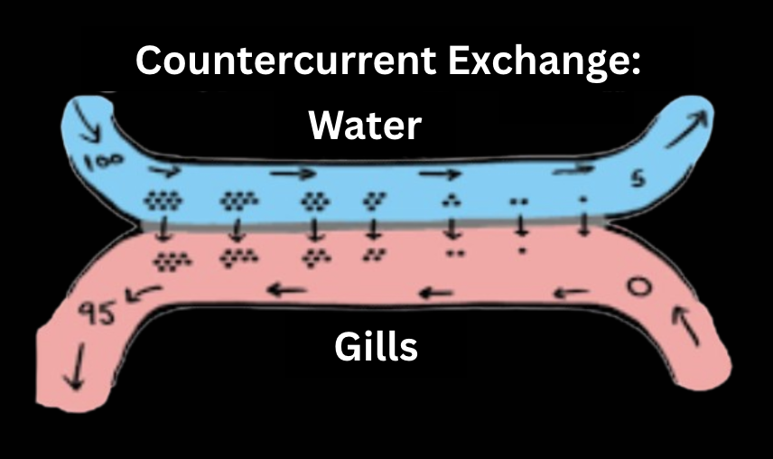
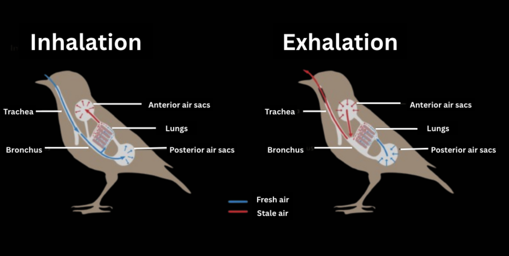
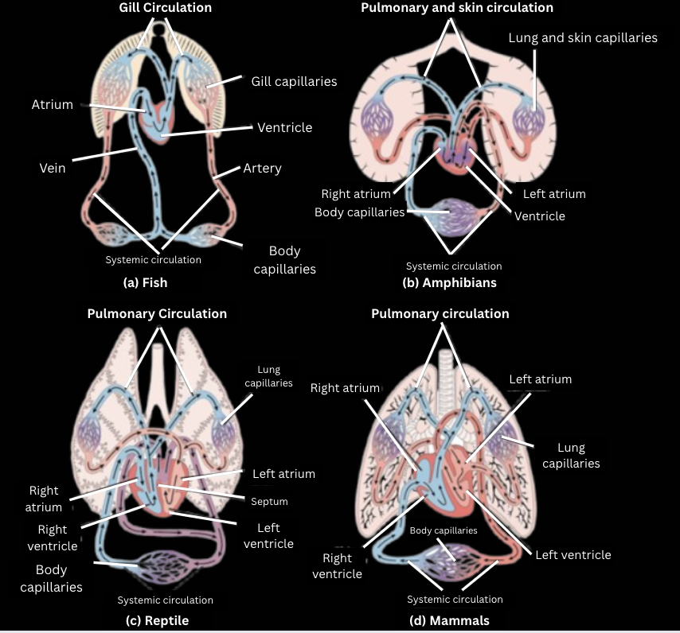

Respiratory Systems in Different Animals:
*Important distinction to note: Negative vs positive pressure breathing.
- Negative pressure breathing (done by mammals, reptiles, and birds) → thoracic cavity expands (by contracting diaphragm and lifting rib cage). Lowering pressure in the lungs, PULLING air in (high to low pressure movement).
- Positive pressure breathing (done by amphibians) → PUSHING air into the lungs (because pressure internally is already larger) by increasing pressure in the mouth
Fish: Respiratory organs are gills that make use of a countercurrent exchange system that maximizes oxygen extraction. This works because water flows opposite to blood flow across gills, maintaining a steep oxygen gradient.
Annelids (earthworms): Respiratory organ is the skin, which requires a moist environment in order for diffusion of oxygen to occur. Note: in order to maintain a good ratio of surface area to volume (to increase diffusion rate), earthworms are typically not large in size.
Amphibians: Feature pulmocutaenous respiration (BOTH skin and lungs). Amphibians can switch between lungs and skin depending on oxygen availability. They rely on diffusion across the skin underwater and on lungs above water. When it comes to metamorphosis, larvae depend on gills for oxygen but adults feature pulmocutaneous respiration. Frogs feature positive pressure breathing by gulping air!
Reptiles: More complex lungs than amphibians, have proper septum between oxygenated and deoxygenated areas for increased surface area and no mixing. Make use of negative pressure breathing because they don’t have a diaphragm.
Birds: Called the most efficient respiratory exchange system in vertebrates (continuous inflow of oxygenated air). Feature both lungs and air sacs (posterior and anterior). Make use of a two breath system: First inhalation fills posterior air sacs, storing fresh air. First exhalation causes posterior air sacs to contract, pushing air into the lungs. Second inhalation moves deoxygenated air from lungs to anterior air sacs. Second exhalation pushes air from anterior sacs out through trachea (while posterior sacs repeat steps one and two). *Birds NEVER mix fresh and old air, making them even more efficient than mammals! This is called unidirectional airflow.
Mammals: Please note that mammals have the same breathing system as humans, so please refer to the respiratory system lesson under human biology for more information.
Cnidarians (flatworms): Rely ENTIRELY on diffusion (no special respiratory organs aside from skin).
Insects: Feature trachea and spiracles that deliver oxygen DIRECTLY to tissues without any blood involvement. Body movements allow for ventilation to occur.
Mollusks: Gills with closed circulatory system.
Circulatory Systems in Different Animals:
Fish: two-chambered heart, single circulatory loop (blood flows from heart to gills to the body and back).
Amphibians: three-chambered heart (two atria and one ventricle), double circulatory system (pulmocutaneous and systemic), only some mixing of oxygenated and deoxygenated blood - due to a ventricular ridge.
Reptiles: three-chambered heart (two atria and one ventricle) - only crocodilians have a four-chambered heart, better separation of oxygenated and deoxygenated blood is evident due to muscular ridges in the ventricle.
Birds and mammals: four-chambered heart, fully separated oxygenated and deoxygenated blood, double-circulation (pulmonary and systemic).
Open Circulatory Systems: animals with open circulatory systems include arthropods (insects), crustaceans (e.g., lobsters, crabs), and most mollusks (e.g., snails, clams, oysters). Instead of blood, they have hemolymph that bathes organs directly:

Written by Josephine Ankomah